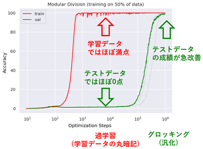

Trend Watching: Grokking
なにものか？
素人が野次馬的に Grokking の研究動向を眺めてみることにした。
Grokking とは
機械学習モデルがトレーニングデータを暗記して、十分に一般化できないものの、長期間のトレーニング後に突然ほぼ完璧な一般化に移行する現象のこと。

日本語の「腑に落ちる」「腹落ちする」に該当するそうで、何故か興味がある。
「Grokking」という用語は、ロバート・ハインラインのSF小説「異星の客」から借りてきたものとのこと(未読)
動向
たぶん、こんな感じ。

-
[1] Bridging Lottery ticket and Grokking: Is Weight Norm Sufficient to Explain Delayed Generalization? (2023) 東大松尾研
-
[2]Unified View of Grokking, Double Descent and Emergent Abilities: A Perspective from Circuits Competition (2023)
-
[3] Grokfast: Accelerated Grokking by Amplifying Slow Gradients (2024)
AIによる要約はこちら
Grokfastは、勾配の低周波成分を選択的に増幅することにより、グロッキングとして知られる遅延汎化現象を、さまざまな深層学習タスクにおいて最大50倍加速させる。
-
[4] Let Me Grok for You: Accelerating Grokking via Embedding Transfer from a Weaker Model (2025)
AIによる要約はこちら
GrokTransferはまず、より小さく弱いモデルをトレーニングし、自明ではない（しかし最適には程遠い）テスト性能に到達させます。次に、この弱いモデルから学習された入力埋め込みを抽出し、ターゲットとなるより強力なモデルへの埋め込みを初期化するために使用します。
弱いモデルから強いモデルへの知識伝達の原則に基づいており、より単純なモデルからの洞察が、より複雑なモデルの学習をブートストラップできます。
(「知識蒸留」は強いモデル(教師モデル)の知識を使って、弱いモデル(生徒モデル)の学習を支援するけど、その逆ってこと? 面白い。)